Introduction
The aim of this project is to create a high fidelty prototype of an interface for an autonomous vehicle. As a group, we picked a specific context to focus on, and in this case we decided on tour buses and tour transport in general. During the process, we have conducted user testing, prototyping and evaluation to create an interface and interaction experience most suited to our context.
1 | Background Research
In week 1 of the semester, we began the design process by forming our groups and discussing initial ideas and problem areas. This involved filling out a group charter, defining our goals, general guidelines and discussing initial roles or focus areas for each member of our group going forward.
Having received the design brief, we knew that we would be designing a user interface for some form of autonomous vehicle. With this in mind, we began ideating more specific contexts to address with our design. We did this by creating mind maps and lists with our ideas, then expanding on them to see where we might be able to take them and whether it would be an interesting area to focus on. Some of the initial areas we were interested in included school buses, tour buses, party/amusement buses.
To further investigate the different areas we were interested in and explore what they might have to offer, we each did some background research which we collated in a google docs. This revealed that there were already autonomous school buses in development, but nothing in the tour bus industry. This meant that we had more freedom to design the interface around hypothetical features that might be implemented in the future and also solve some existing problems that might not have been considered yet. Furthermore, we had doubts about the school bus context, which we were initially preferring to focus on, as there might be issues of privacy etc. when children are being involved. Thus, we settled on the tour bus and tourist experience with an autonomous vehicle as our context since it seemed like an interesting option to explore and research down the track.
The following week allowed us to gain a greater understanding of our chosen context by doing more background research as well as begin planning for our user research methods and strategies. During the tutorial and lecture, we were introduced to some new testing methods and also went over some ones we had used before from previous subjects.

As a group, we created a stakeholder map of the different types of users our design could affect. This gave us a clearer idea of who we should focus our testing on, and who our design caters to the most. With this in mind, we began figuring out what the best testing methods would be to implement, who our users were, and how we would recruit them. This also gave us more to consider in the testing and design process, as it showed us how far the reach of our project could potentially be.
2 | Planning
Using the ‘Design. Think. Make. Break. Repeat.’ book for guidance in week 2, we picked out which methods we thought would be most effective for gaining the most insight from our target users. We considered what would give us the most valuable insights in the timespan given. One of the key testing methods would be interviews, and thus we began drafting a list of interview questions regarding tour buses, the tourist experience and autonomous vehicles.
 Design. Think. Make. Break. Repeat.
Design. Think. Make. Break. Repeat.
We also began dividing the rest of the methods out amongst our group, as we didn’t want to have too much overlap on who conducted which tests in order to effectively gain the greatest amount of unique and valuable data. We each decided on 3-4 different testing methods to research the context and our users and planned how these tests would be carried out in the upcoming weeks.
By week 3, we began to focus on our individual testing methods and research. I had decided to conduct my research through diary studies, direct experience/immersive observations and user interviews. I began organising these tests by reaching out to potential participants and recruiting people to take part in them for the diary and interviews. Luckily, two people I knew were overseas on a trip in Thailand at the time, so I was able to contact them as ask them to write short diary entries over a week throughout their trip about different forms of transport they’d taken, the experience, thoughts, feelings and frustrations. I also began conducting interviews with some other uni students, friends or mutual friends that I knew who had past tourist experiences or been on tour buses before. I planned to find a variety of different users, from those who rarely travel to those who have had many tourist experiences.
3 | User Research
Having planned out how each test method was going to be conducted by week 4, I was able to approach the immersive observation session on the actual tour bus with some insight and guidance as to what areas to look for.
Before conducting the observation, I did some research on the different hop on and hop off tour bus services in Sydney. The most popular seemed to be the Big Bus tour service, and it also had the most locations for different stops throughout the city that were accessible to me. I was able to get onto a bus towards the end of the day near Central station, and go for a short trip around the city to observe the experience from a first hand perspective.


This gave me a really good idea of what it felt like to be an actual tourist on this experience. Furthermore, it let me spot out common problems or frustrations related to the experience while on the bus, which included the lack of entertainment, real time updates and information during the trip, inflexibility of the trip and personalised content. This seemed to really support the user’s needs of wanting something unique and memorable, as the overall tour bus experience felt very systematic and commercialised. While it was a convenient way to get around the city, everyone ends the day having had the exact same experiences and nothing is specifically tailored to them. It felt like it was simply just a mode of transport, which doesn’t aim to provide an interesting or exciting user journey while taking the bus.
I also conducted interviews and started receiving diary logs back from the other users that were being tested. I found that having a broad range of users with different perspectives in interviews gave me a really good idea of their needs and wants. Even though some users hadn’t travelled a lot and other had been on many vacations, the most common theme was a desire for a unique experience that was personalised to them. When focusing on the forms of transport that users valued the most, convenience was a big consideration.
4 | Synthesis
By the end of the 4th week, I had also conducted most of my interviews and diary studies, and began to synthesis the data I’d collected from them using analysis methods such as affinity diagramming. This allowed me to break down all the insights gathered from users into key user needs, which turned out to be: Accessibility, Authenticity, Engagement, Information & Comfort.
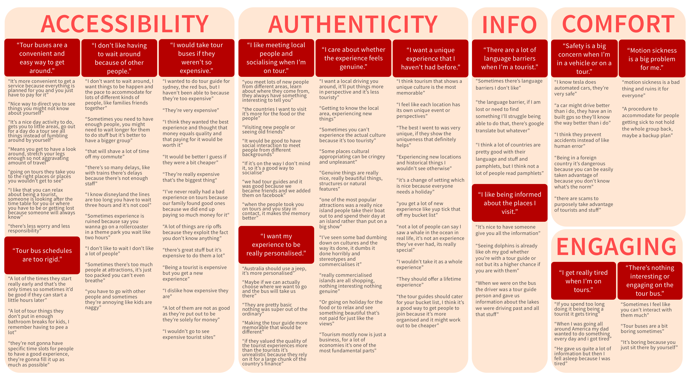
After going through photos and observation notes, I was also able to pinpoint issues or hindrances in the user experience. These problem areas included a lack of interactivity, only static maps, brochures or pre-recorded audio information, and no customisation to the experience.
The best way of depicting and summarising all these findings were through the use of personas. Through user testing, I was able to narrow down some use cases for the experience, and breaking these down into personas helped to understand the problems from a human perspective. Furthermore, it made the main issues and wants of the users easy to understand and communicate to the rest of my group once we had to collate all our findings.


Having experienced the user journey myself and observed it first hand, I had adequate insight to create a storyboard that depicts the typical journey. This let me highlight the key frustrations and problems within the experience, and therefore the areas that could be addressed and improved.
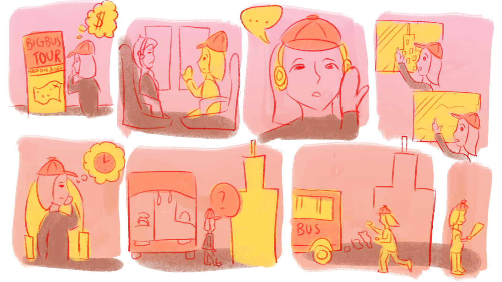
The combination of these synthesis methods made it easier for our group to summarise each of our findings and go over them together after completing our research reports. We found that we did have an overlap with our testing and research results, in that users highly valued personalisation and convenience. This informed our ideation going forward and allowed us to develop a problem statement to define out project: How can we create an engaging and personalised tour bus experience through an interactive interface?
5 | Paper Prototyping
After taking time to go through each other’s reports and discuss our findings and results, we regrouped in week 5 to use this information and begin ideating. This involved ideation methods such as creating pros and cons lists, brainstorming and mindmapping. We wanted to stay focused on our key user needs and make sure to target them with our ideas. The ideation session led to us coming up with three key user experience ideas, which were: choose your own adventure tour, tour bus AI and tour guides with personalities.
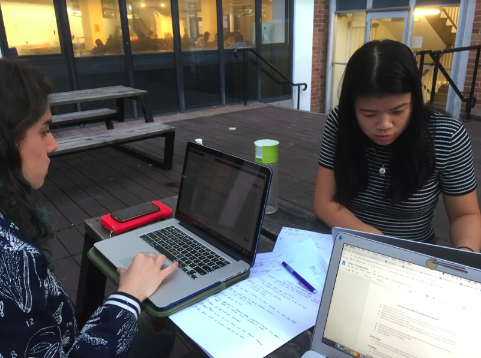
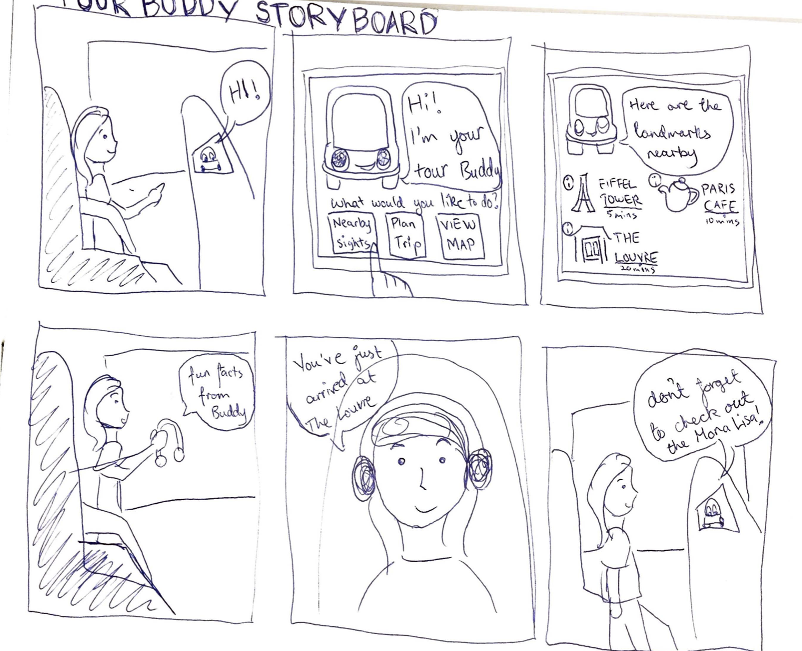
We initially approached the ideation with a more user experience centred approach, and this caused us to consider the user journey and experience as a whole in our ideas. While it allowed us more freedom and creativity, we steered a bit too far from the interface focus of the design brief. It also caused the autonomous vehicle to fall back in priority as we were considering the user needs over the brief.
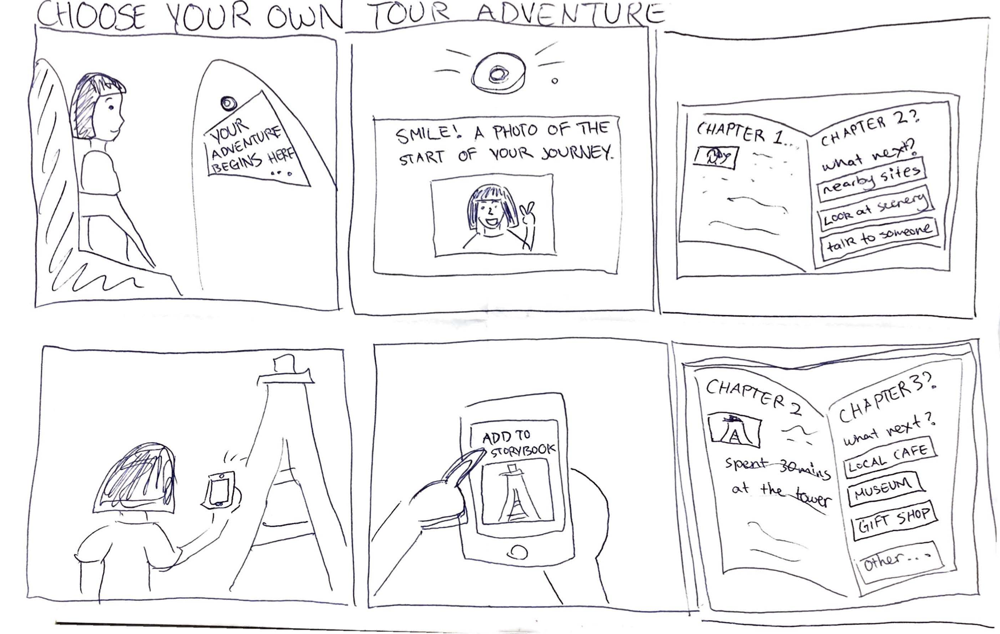
Having time to go over our ideas in the following week, we began week 6 by attempting to refine our ideas with a more interface interaction approach while still solving our problem statement. This allowed us to narrow down our focus into three main categories, which was autonomous planning, booking and alerts, as well as tourist pick up and drop offs.
With these areas in mind, it became easier to ideate around the specific features in conjunction with the brief on autonomous vehicles, while also taking into account our tour bus context. After figuring out the details and interactions included in each concept, we were able to begin sketching out UIs to get a better idea of what the prototype might look like.
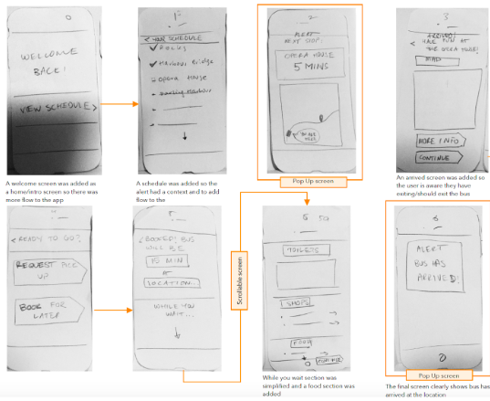
Having these sketches allowed us to first evaluate our concepts and also properly think through the finer details and features that would be involved implementing it. We were also able to start getting a basic idea of how the screens would flow from one to the next.
By individually looking at each of the different concepts in sketches, we were also able to compare and contrast how they differ and what experiences and interactions they might offer to the users. This gave us some insight before beginning to test them, and running through them first on our own also made it easier to figure out if there were any glaring errors to be fixed before these low fidelity prototypes were brought to proper user testing.
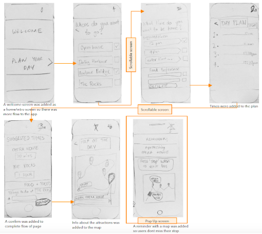
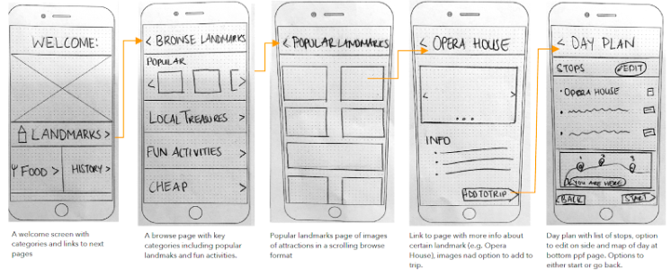
After we refined these initial concepts into physical paper prototypes, it made it easy to to the first round of testing in week 7. We recruited users who had had tourist experiences and gave them a brief rundown on the purpose of our prototype. In order to get inside of the user’s heads and follow their thought process throughout the testing sessions, we decided to use a combination of the think aloud and cognitive walkthrough methods.
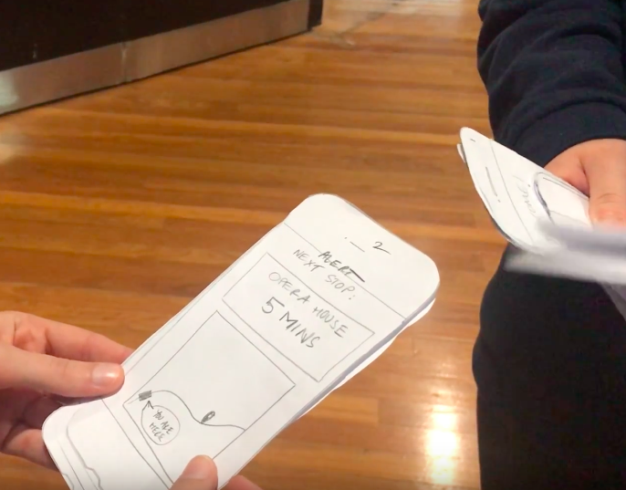
Upon testing these concepts, it was revealed that users found the third concept too simple and basic. This was one of the clearest insights in the first round of testing, and due to the overwhelming response, we decided to stop testing the third concept and thus focus more on the iterating the first two and developing them further since they proved to be more promising.
Continuing from this stage, we spent the week transcribing and analysing the data and user feedback about the two main concepts. Most users enjoyed the simplicity and convenience that the apps offered, however there was still points of confusion in both the interfaces, so in the next iteration we worked on improving or redesigning them based on the feedback.


After continuing to test the two concepts that we’d decided to focus on, most of our feedback revealed that there were pros and cons to both ideas. At this stage we decided that the result of our testing wasn’t able to tell us which idea was better, but instead which features from each we should combine into our final iteration. The majority of our users really enjoyed the convenience and personalisation of the autonomous planning concept, but also liked having the ability to browse through nearby or popular landmarks and book and stay alerted about the status of their tour bus.
6 | Wireframes
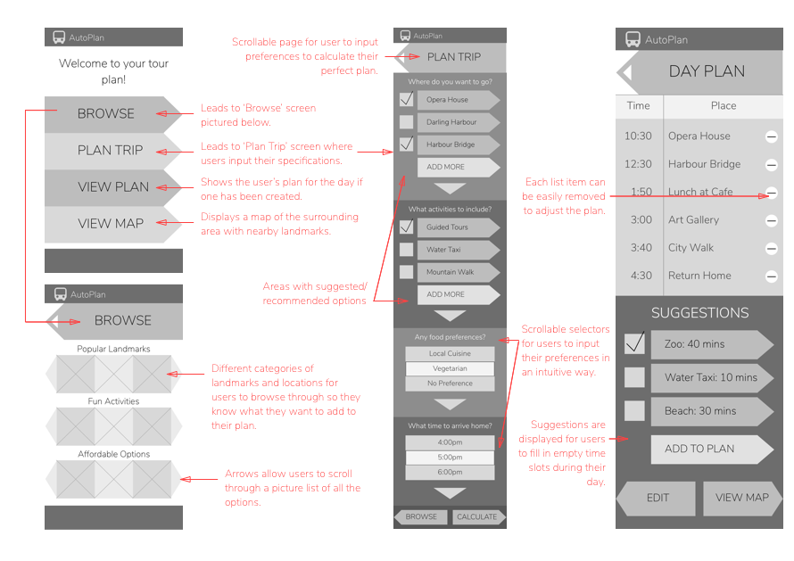
After we’d successfully developed a mockup of our prototype’s iteration, the next stage was to convert it into wireframes digitally on Sketch. In doing so, we kept the design’s core principles of simplicity and directed flow in mind and transferred the screens as closely as we could to the sketched interface. Since we were still planning on testing this version of the wireframes, we didn’t want to invest too much time into improving features that we wanted to change, since we wanted to figure out these insights from further user testing.
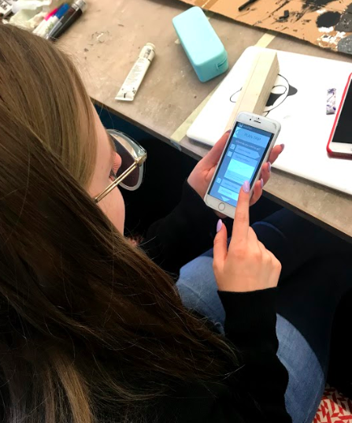
The first draft of our wireframes were put into a Pop prototype, which allowed us to quickly test it with randomly selected users at the university. These tests revealed that the depth of interaction was still quite shallow, since we’d only implemented the main screens at this point. We didn’t want to invest too much time at this stage into creating pop ups or additional minor screens, however the testing was helpful in revealing what features users commonly tried to interact with and what aspects led to confusion. This gave us a good idea of what extra pages, ‘more info’ sections and clarification we needed in the final prototype and how to effectively add them to the interface.
A key insight that stemmed from the initial tests of our wireframes also revealed that users lacked a ‘main’ hub or central page to return to. After opening the app for the first time, the welcome page became redundant and users wanted something that gave them a better sense of their status within the experience or journey where they could quickly see an overview of key information. This gave us the idea to create a ‘Dashboard’ page common in many interfaces that provides a solution to these needs while also adding an extra layer of interaction to our user flow. By incorporating this extra page, it definitely improved the user experience drastically and seemed to bring the whole interface together and connect all the separate screens more effectively. Furthermore, it prompted the use of a footer to give users an extra sense of control by allowing easy access to the main three pages within the application.
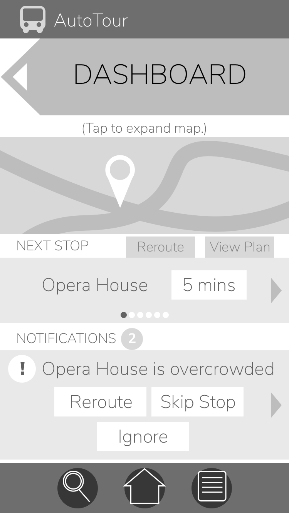
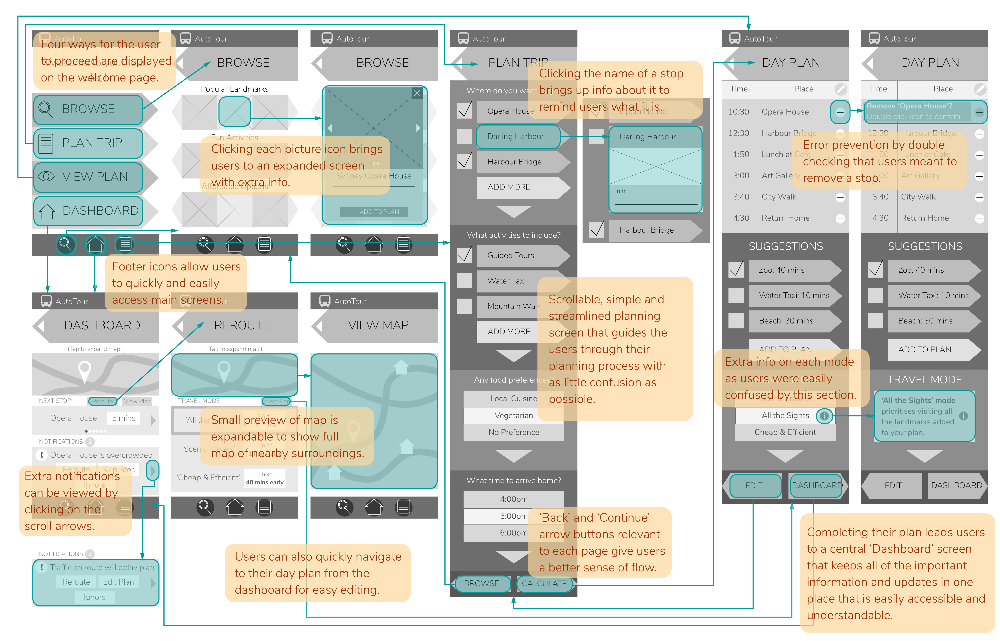
The final iteration of wireframes included a lot of extra pop up or informative additions to keep the users informed while navigating through the app. As a result of our testing, we had a really clear picture of what the users needed and how to deliver it. Thus, we were able to create a set of wireframes that addressed all the key issues and provides a holistic experience for the user in regards to their autonomous vehicle.
8 | Interactive Prototype
After completing the final iteration of the wireframes, we began thinking about how we’d start taking them into a high fidelity prototype of the interface. We started this by first deciding on a colour scheme and drafting up the first iteration of the final prototype. In this version we kept most of the elements as similar to the wireframes as possible since this is what testing had shown us was most suitable for the target users.
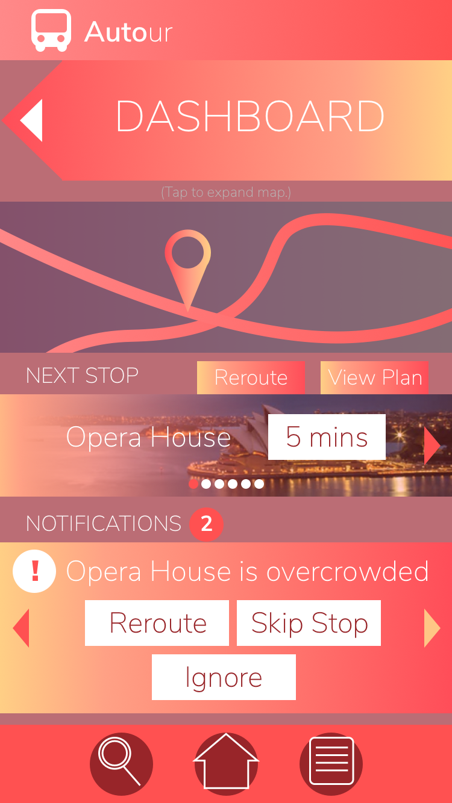
After completing the final iteration of the wireframes, we began thinking about how we’d start taking them into a high fidelity prototype of the interface. We started this by first deciding on a colour scheme and drafting up the first iteration of the final prototype. In this version we kept most of the elements as similar to the wireframes as possible since this is what testing had shown us was most suitable for the target users.
The colour scheme that we picked for the initial interface was red and yellow based on the colours most commonly used to brand the hop on hop off tour bus services. We thought that this would make it easy for users to associate it with its purpose and use recognition for them to relate it with the tour bus it’s paired with.
However, even after creating the high fidelity designs in this colour scheme, we noticed that there was a lack of contrast and the palette didn’t really allow for specific buttons or call to action sections to pop out at the user. We still took the designs into testing with some users to get some feedback from their perspective, and we also did some more secondary research online for interfaces in a similar context to see what’s worked successfully for them. Users definitely had similar concerns as we did and didn't find the colour scheme very pleasing or easy to view.
We found that many travel apps or websites tend to use a green/blue/yellow colour scheme, so we decided to move forward by creating another version using this palette. After doing so, we did some A/B testing with users to compare both versions and most people definitely preferred the green colour scheme a lot more. With the user testing to support our decision, we carried on reiterating the prototype with these colours.
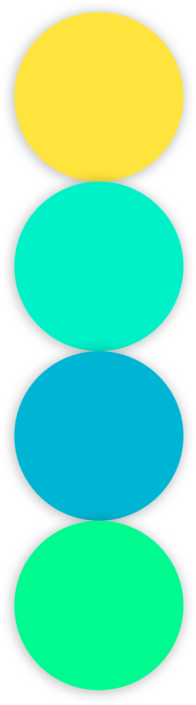
We ended up continuing to iterate our final design as each time we tested it, users would bring up new concerns. The original design had many arrow elements to give users a sense of flow and show them which way the app was directing them. While this worked effectively and had a positive response for the wireframes, it wasn’t the case for a high fidelity design. Users tended to prefer icons or elements that are recognisable and similar to those that they’ve seen in other interfaces, thus we updated the design to reflect that.


9 | Final Design

The final interactive prototype was able to reflect all our testing and research, and we managed to create an effective interface. After analysing all our findings and updating our screen accordingly, we were able to create this user interface that addresses the problem area in our context while providing for all the user’s needs.